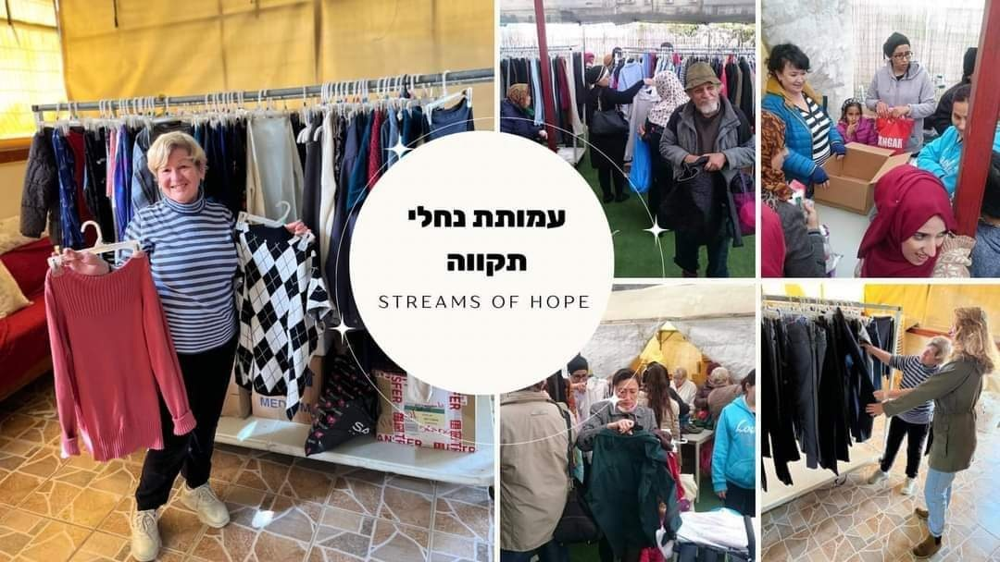
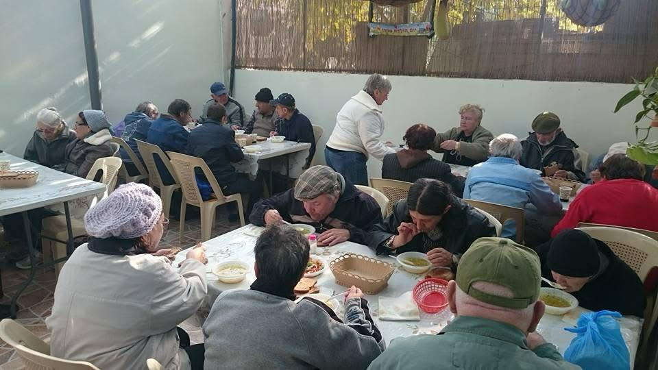
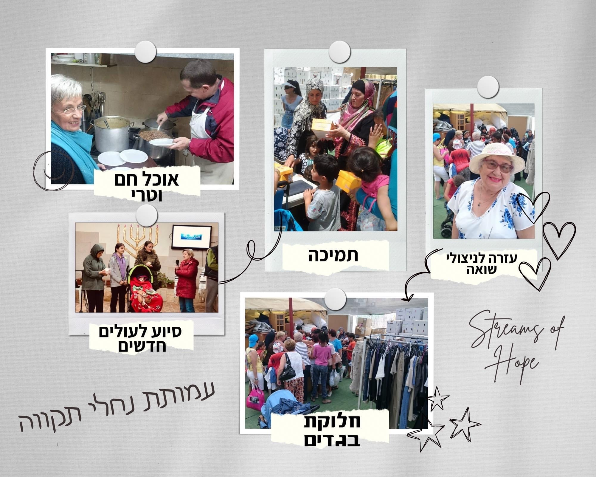

Недельная глава Торы
Weekly Torah Portion
Берейшит
בְּרֵאשִׁית
Берешит 1:1–6:8
Берейшит — первая глава нового цикла чтения Торы. Читается в Шаббат, 10 октября 2026.
Частная благотворительная помощь репатриантам, малоимущим, детям войны и матерям-одиночкам. Мы стараемся быть рядом там, где особенно нужна практическая поддержка. Private charitable assistance for repatriates, low-income families, children of war and single mothers. We aim to be present where practical support is needed most.
Следующая глава • 10 октября 2026 • כ״ט בתשרי תשפ״ז
Берешит 1:1–6:8
Берейшит — первая глава нового цикла чтения Торы. Читается в Шаббат, 10 октября 2026.
Помогаем новым гражданам Израиля адаптироваться в Беэр-Шеве с первых дней: вещами, практической поддержкой и консультацией.We help new citizens of Israel adapt in Beersheba from their first days with material assistance, practical support and guidance.
Здесь можно получить необходимую помощь и узнать, к кому обратиться по практическим вопросам. Мы стараемся работать просто и напрямую — от человека к человеку.Here you can receive practical assistance and find out where to turn with everyday questions. We try to work simply and directly — person to person.

Готовим из свежих продуктов для людей, которым сейчас нужна поддержка. Здесь важна не только еда, но и человеческое отношение.We prepare meals from fresh ingredients for people who need support. Food matters, but so does human care.
Столовая является одним из постоянных направлений нашей работы. Фотографии можно смотреть в отдельной галерее прямо на сайте.The canteen is one of our ongoing areas of work. Photos can be viewed in a separate gallery directly on the website.

Отдельный раздел для фотографий, связанных с учёбой, встречами и мероприятиями колледжа.A dedicated section for photos related to studies, meetings and college activities.
Здесь будет фотогалерея колледжа. Фотографии добавим, когда ты их пришлёшь.This will be the college photo gallery. Photos will be added when they are provided.
Отдельное направление помощи, встреч и человеческой поддержки для переживших Холокост.A dedicated area for assistance, meetings and personal support for Holocaust survivors.
Здесь будет собрана фотогалерея встреч и помощи. Фотографии добавим, когда ты их пришлёшь.This gallery will collect photos from meetings and assistance. Photos will be added when they are provided.
Здесь собраны выпуски новостей, обращения и документы организации. Каждый материал открывается отдельно, а новые файлы можно добавлять сюда такими же карточками.Newsletters, appeals and organization documents are collected here. Each item opens separately, and new files can be added here as matching cards.

Русско-английский выпуск о работе организации, событиях и помощи людям в Беэр-Шеве.A Russian-English edition about the organization’s work, activities and assistance in Beersheba.
Обращение о помощи семье из Беэр-Шевы, чей дом пострадал в результате ракетного удара. Документ можно открыть и прочитать полностью.An appeal to help a family in Beersheba whose home was damaged by a missile strike. Open the document to read the full story.
У каждого проекта есть одна рабочая кнопка. Все материалы открываются прямо с сайта и хранятся вместе с ним.Each project has one clear working button. All materials open directly from the website and are stored together with it.
Основной файл проектов организации — Organization book 2.pdf.The organization’s main project document — Organization book 2.pdf.
Регулярная помощь горячим питанием и отдельная фотогалерея проекта.Regular meal support with a separate project photo gallery.
Материальная помощь, адаптация и практическая поддержка в первые месяцы жизни в Израиле.Material assistance, adaptation and practical support during the first months in Israel.
YouTube-канал общины «Дом Благодати»: видео встреч, служения, событий и жизни общины. The “House of Grace” community YouTube channel: meetings, ministry, events and community life.
Наша группа в Facebook: новости, фотографии, события и материалы благотворительной организации Streams of Hope. Our Facebook group with news, photos, events and updates from the Streams of Hope charity organization.
Люди и организации, которые остаются рядом, помогают, поддерживают наши инициативы и участвуют в добрых делах вместе с нами.People and organizations who stay close, support our initiatives and take part in good works together with us.
В этом разделе будет фотогалерея наших друзей, партнёров и людей, которые помогают организации. Фотографии добавим, когда ты их пришлёшь.This section will contain a photo gallery of our friends, partners and people who support the organization. Photos will be added when they are provided.
Частная благотворительная организация в Беэр-Шеве. Работаем напрямую и стараемся, чтобы помощь доходила до конкретного человека.A private charitable organization in Beersheba. We work directly and aim to make sure support reaches real people.